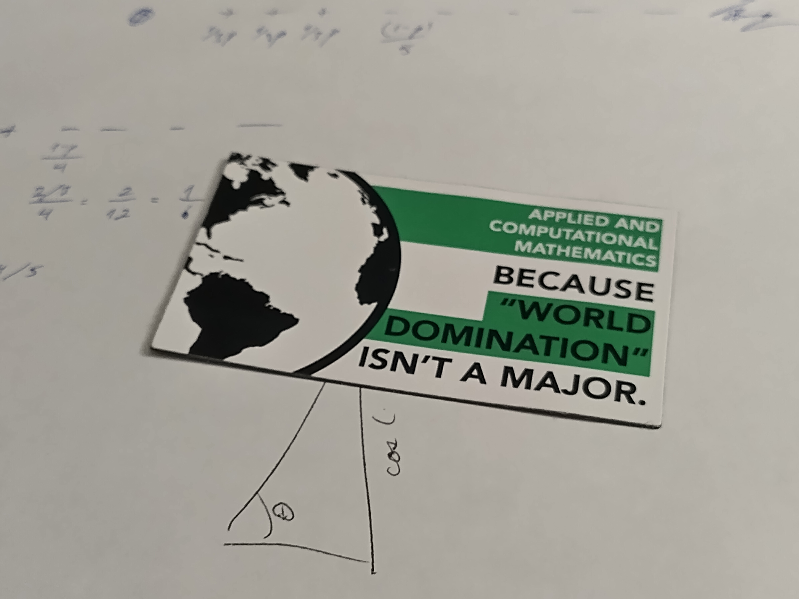

Thoughts on BYU’s ACME math program upon finishing core classes

This semester, I finished the “senior core” of BYU’s Applied and Computational Mathematics Emphasis (ACME) program. It’s been an awesome journey, and since other people’s thoughts on the internet were influential in leading me to join the program, I thought I’d share mine.
How I ended up in ACME
I started my journey at BYU studying electrical engineering. My second semester, I took Digital Systems (EC EN 220) and Circuit Analysis (EC EN 240). At the close of the semester, as I prepared for my final exams in a windowless room on the fourth floor of the Clyde (BYU’s old engineering building), my thoughts wandered. I really enjoyed what I was learning, but the physics class I was also taking (PHSCS 123) and conversations with my astronomy major then-girlfriend (now wife) made me wish I could explore the fundamentals more. I wanted more theory, feeling that if I thoroughly understood the theory behind what I was doing, I could go farther in the long term. I wanted to learn to learn, afraid I was studying techniques and tools that wouldn’t be relevant in the long term.
Now, I don’t think all of my thoughts were spot on. That was four years ago (early 2021), and even with the advent of ChatGPT and other LLMs, I don’t think the electrical engineering skills I was learning will be irrelevant anytime soon, if ever. The thoughts I was having led me down a good path, though. I wanted to find a way to bridge the gap between the exciting hands-on applications of electrical engineering with the rigor and theory in a program like physics. I wanted to have the deep theoretical understanding necessary to adapt to the jobs of the future, while still having useful skills today, even if some tools I learn might go obsolete.
There in the Clyde, my mind drifted. I remembered I’d seen a stranger a few weeks earlier wearing an ACME shirt while playing pool with my brother, and decided to look the program up again. As I read about ACME on its website as well as various forums, it felt right, it felt exciting! It dawned on me that such a program might fulfill my goal of bridging intense theory with application, and that mathematics is and always will be relevant in any technological field.
My experience in the program
Soon afterwards, I left my studies to serve a two-year mission for the Church of Jesus Christ of Latter-day Saints. Upon my return, ACME still felt like a good path, so I stuck with it. In my year studying electrical engineering, I’d taken all of the prerequisite math classes like linear algebra and multivariable calculus, so I just needed to take an introductory proofs class (MATH 290) and a bit of real analysis (MATH 341) to be eligible to start the “junior core” of ACME (which began every fall at the time). I took them over the summer and jumped into the junior core that fall (my sophomore year), hoping that having the advanced math done earlier would lead to cool opportunities down the line.
The heart of the ACME program consists of the “junior core” and “senior core”, which each last two semesters. Each semester, students take an envelope of four interdependent classes. Two are traditional lecture classes, and two are programming lab classes with no lecture component. Most students take them all consecutively for two years, so the people you start the core with (your “cohort”) are the same people you finish with. We were encouraged to take advantage of the junior and senior study rooms—two large rooms full of whiteboards and long tables, reserved for ACME juniors and seniors to collaborate on homework and projects.
In my opinion, students who didn’t take advantage of the study rooms missed out on what may be the most valuable part of the ACME program: the people you meet. I met some stupendous people in the junior and senior rooms. Last week we had our final ACME gathering, a presentation session to showcase our final data modeling projects this past semester. I realized I knew the names and personalities of just about everyone in the program… except for a few who didn’t make a habit of collaborating with their peers in the ACME rooms. They missed out on a once-in-a-lifetime opportunity! My peers became my team, and some, my closest friends.
The program is by no means perfect. I’ll list what I think are its best and worst aspects.
What makes ACME great
- It fulfilled my expectations—a thorough treatment of mathematical theory balanced with plenty of fascinating real-world applications.
- I learned to learn, just as I’d hoped. (Admittedly, this probably happens in any intense university program.)
- Super cool curriculum developed by BYU faculty, supposedly unlike most applied math programs. See information about textbooks and complete lab manuals and textbooks’ tables of contents.
Faculty is very invested in the program, they’re passionate about it. It’s only twelve years old.
- ACME won the American Mathematical Society’s 2024 “Award for an Exemplary Program or Achievement in a Mathematics Department”. Can you spot me in the picture?
Faculty does a great job facilitating and encouraging collaboration among students.
- The senior core has lots of big group projects. Since I’d spent the junior core collaborating on homework in the junior room, I knew there were plenty of great people I could choose to work with on them.
The lab classes augment the lecture classes very well.
- The labs are all in Python (supposedly they were originally going to be in MATLAB! Glad that didn’t happen). They introduce you to a broad array of useful Python packages (particularly NumPy, SciPy, and scikit-learn) as well as object-oriented programming.
- I found that the labs prepared me well for my current research job, which in turn helped me land an internship.
Heavy focus on employability.
- The math department hosts networking events regularly and practically begs you to let them help you with your resume and such
- Applications well beyond pure mathematics. See list of ACME concentrations.
- Great food haha! These folks know how it’s done. Abundant Cafe Rio and Panda Express at a ton of events.
What it’s still working out
“Volume 4”, the program’s textbook on dynamic systems, control theory, and related topics (see its outline), still needs a lot of work.
- My peers and I frequently felt frustrated because Volume 4 is still pretty rough around the edges. Lots of typos in the textbook draft and not-so-clear explanations.
- The homework questions in Volume 4 also didn’t seem to probe deep understanding of the material, so I’m still not sure I understand it as well as I’d like.
- I should note that Volumes 1 and 2 (the textbooks for the junior core) are superb, and have been published (Volume 1, Volume 2), but the faculty is still working on volumes 3 and 4 (see textbooks’ tables of contents). Volume 3 is in great shape, I’d say. Volume 4 needs some work.
The workload can be very intense. The pressure just about breaks everyone at some point in their experience.
- In the junior core, each homework assignment (students have six homework sets a week) took me around 3 hours, even 4 on bad days. Add on top of that the 2 or 3 hour labs assigned twice a week, and you end up pretty busy, since you’re also expected to do textbook readings before each class. (Not to mention the mental strain—breaks are a must!)
- In the senior core, each homework set took around 2 hours, but there are also two end-of-semester group projects assigned that each took me between 20 to 30 hours.
- The core classes technically total 8 credit hours per semester (12 credits is the minimum one has to take to keep scholarships), but took a lot more time than any other 8 credits would have. I’ve started telling people to schedule their semester thinking of ACME as 12 credits rather than 8, since it will take over your life for two years, in a sense. I sometimes wish the number of credit hours reflected the workload, although I’m aware of some reasons that such an increase in credit hours is not possible.
Prideful attitudes.
- It seems like this is getting less common in the program (I hope it is at least). I noticed that students in other programs, like engineering, physics, and APEX Math (BYU’s more mainstream math program) sometimes harbored some resentment for the ACME program because of prideful people they’d interacted with. I remember talking to an engineering student about ACME—he told me that he knew about the program, since a peer in one of his engineering classes was in ACME, and constantly reminded everyone in the class how easy the integrals and other tricky math concepts were for him! Nobody wants to work with a person like that, and ACME’s grandiose promises (“world domination” comes to mind 😉) might contribute to some students having such attitudes.
How to succeed in ACME
Based on my own experience and what I saw in my peers, I think these are an ACME student’s tickets to success:
Set boundaries.
- My wife helped me set boundaries to make sure I was taking care of myself, which worked wonderfully, but not everyone fared so well. To their credit, the faculty repeatedly encouraged everyone to put their health and well-being first, even when that meant not finishing homework. In practice, it’s hard to resist staying up and instead turn in your chicken-scratch half-done hand-wavy homework when it’s only 9 pm, but I learned to embrace it. I still did fine on exams.
Internalize the law of diminishing returns.
- I found that I could put in 70% of the time and learn 95% of the material on homework assigments. Would that last 5% have been worth it? I don’t think so. I got A’s in all my ACME classes except for a semester of Volume 4 because I didn’t do so well on the final and ended up with an A minus. I learned a ton in this program.
Don’t compare yourself to others—celebrate others!
- All the people who make it through ACME are stellar students. Growing up, I found that I was quick at math. I got used to being at the top of my class, and I aced math and physics exams with little real effort. In ACME, for the first time, I found myself in a community where I was overwhelmingly mediocre. I saw dozens of people all around me who seemed to understand things much faster than I could, and it was easy to want to compare myself to them.
- Throughout the program, I often reflected on the third chapter of Malcolm Gladwell’s Outliers. In it, Gladwell proposes that metrics for intellectual ability like test scores and IQ are only meaningful up to a threshold. Beyond a certain point, once someone is “smart enough”, having an even higher score doesn’t make much of a difference—they are just as likely to succeed as those with the highest scores. While some people in ACME really stood out as bona fide geniuses, to me, everyone seemed to easily surpass the intelligence “threshold”. There is no need to compare in ACME because if you’ve made it to the junior core, you are smart enough, and other attributes like emotional and interpersonal skills will probably have a much greater impact on your success than your raw intelligence.
- I found that most people in the program love helping each other. When my friends succeed, I succeed too, because I know that they want to help me, and I want to help them! In my cohort there was a culture of helping peers understand tricky homework problems, even if it took time. Eventually I sought to give as much as I received. Many concepts were too hard for me to grasp on my own, and my peers taught me. Then when I saw others struggling, I’d pass the understanding on to them the best I could. Everyone benefits in such a culture, and I hope other cohorts experienced something similar. It is easy to celebrate others’ successes, since their success is yours too!
Conclusion
The ACME program is a great idea executed well. I had no idea I was able to learn so much so quickly. The material in the core curriculum is foundational, and will remain relevant in most technological fields well past my lifetime. The faculty members involved are fully invested in the program, so ACME will keep improving just as it has throughout the twelve years of its existence. I’m glad I chose to be a part of it!